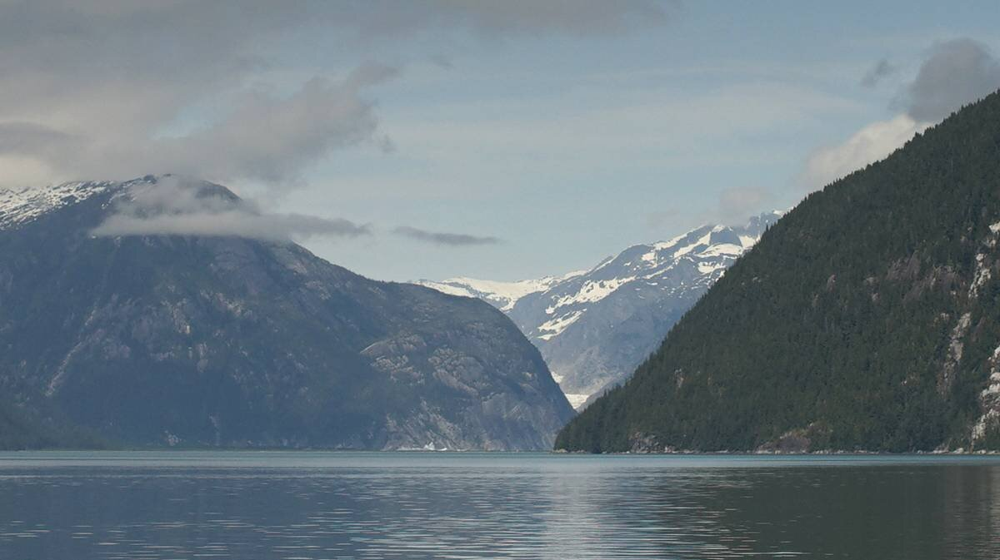

us se alaska

In the summer of 2024 we sailed north through Northern B.C. and up to Southeast Alaska, we spent 40 days there and traveled 760 nautical miles.
Sailing nearer to outer waters will guarantee more wind, closer to the mainland, less so. We chose to go closer to the mainland because the scenery is better, more scenic/full of mountains, than going up Clarence Strait(which in our opinion, is a terrible body of water). We did not go see glaciers, because it would have added many more miles to our already long journey, and we didn't want to risk motoring too much. We had engine issues near Sitka which gave us a bit of a scare, and which prompted us to sail back to Canada on the west outer waters of Southeast Alaska(we resolved our issue while anchored in Port Bazan on the west coast of Dall Island).
The sail on the outside offers very good sailing wind, it is also where we saw the most wildlife, many humpbacks, black-footed albatrosses, horned puffins, pidgeon guillemots, murrelets, sea lions etc. If your goal is to sail out here, mind the size of the waves, weak wind and big waves will hinder your progress and make it very uncomfortable. If leaving after a day of big weather, the waves will take some time to diminish. Note that waves are always messy and larger near shore. Sailing on the outside west coast doesn't guarantee zero current, we had current near the Hazy Islands and Coronation Island, and when rounding Cape Muzon a wind against tide can kick up some pretty steep seas(depending on the amount of current).
Books
We used the Douglass book on cruising in Southeast Alaska for help finding good places to anchor, but some information on anchorages are outdated. It is not a cheap book, but we found it helpful, still.
We found the community edits on the Navionics app to be incredibly useful for this trip, especially with comments by Violet Hour-a sailing couple that has been cruising there since 2021, which don't oversell anchorages like the Douglas books do. Some blog posts on their website documents what it is like to cruise in Southeast Alaska, but it appears like they don't update it much anymore. The move to instagram is unfortunate, blog posts are a much better format when offering detailed cruising advice.
Wagonner has a short section on Southeast Alaska, it isn't the best reference for anchorages, but it is worthwhile for information on marinas. The book has maps of all of the marinas, with numbered docks, making it easy to locate the slip when it is assigned to you.
We also referenced Taken by the Wind by Marilyn Johnson. The book covers Northern BC in great detail, it also has a section on Southeast Alaska but it isn't as good(they didn't spend too much time there, we think). Still, this book explains how lows and highs in the Gulf of Alaska creates the weather found in the inner channels, it also provides detail on inflow/outflow winds which occur near glaciers and in Lynn Canal(a very gusty place).
Weather
We listen to weather on VHF whenever possible, but many anchorages don't get good reception (especially if surrounded by mountains). If near Dixon Entrance, it is possible to listen to the Canadian Weather broadcast, which is more detailed for these waters (listen for weather at Dixon Entrance: west of Langara, Dixon Entrance: west coast of Haida Gwaii, Dixon Entrance: East of Langara). The NOAA forecast only covered the ocean from Cape Decision to Dixon Entrance.
In NOAA VHF weather broadcasts, the weather areas listed will depend on where you are. If nearer to the ocean, you'll receive weather on outer waters like Cape Decision to Cape Edgecumbe. You'll likely hear a forecast for an area on the ocean twice, one for waters out to 15 NM, and another for waters 15 NM to 80 NM, it's a bit confusing because "out to" and "to" doesn't always come out clearly on the radio. Keep a map of all of the weather areas nearby, we kept an offline image as reference.
When in Clarence Strait, you'll hear weather for the inner channels only. They list weather for 6 days, for each region. Keep a notepad close by to take note of the weather, if you miss it it takes a long time before you'll hear it again, especially when the broadcaster starts to list weather at specific buoys. Speaking of buoys, here is a list of all of them. Make sure to take note of where all of the buoys are(the Taken By the Wind book has a map which lists where they are), otherwise this list won't be very useful. You can alsoDial-a-buoy to get weather, if you have access to a phone.
We have a satellite phone, but it is not useful for the inner channels (only for oceanic weather), and it is too difficult to get a good connection when surrounded by land. We used it a lot when looking at weather for sailing on the west coast of Baranof and Dall Island, the connection out there was fine. We bought a card for 200 minutes, a Canada-Alaska plan that only works within 12 NM to shore(which is fine for our use). Satellite phone cards are not cheap, but it's a good security. We often sent our position to Devine's dad so he would know where we were when sailing outside of Baranof. We also sent him SMS when we had engine issues, so he would not worry. Note that GRIB files are not useful for areas like Dixon Entrance, but it is a good way to view what systems are forming offshore, and where they are heading. Grib files don't account for cape effects, or funneling.
If you are interested in getting NOAA forecasts by email, check this out. Using FTPMAIL we were able to receive NWS marine GRIB files and plain text weather.
- Instructions on how to use FTPMAIL
- Marine area codes for plain text weather.
Anchorages and/or ports
Anchorages or ports we've visited and documented while in Southeast Alaska. We don't document/photograph all of the places we visit, but look at some abridged notes further down on this page.

Click on the above path to enlarge and view more details, like the names of all of the stops we've done and the distances between each port. Some distances are longer than they would be in a straight line because we had to sail into the wind, doing this adds many more miles to a journey. To see the route leading to Southeast Alaska, see Summer 2024 route in Western Canada.
Summer 2024 route: Foggy Bay > Bar Harbor (Ketchikan)> Snug Cove > Ratz Harbor > Snug Cove > Frosty Bay > Berg Bay > Wrangell > Deception Point Cove > Petersburg > Ruth Island Cove > Portage Bay(Kupreanof Is.)> Duck Point (Cape Fanshaw) > Chapin Bay(Admiralty Is.) > Eva Is.(Baranof Is.) > Baby Bear Bay(Baranof Island) > Piper Is. > Sitka > Sandy Bay(Baranof Is.) > Port Bazan(Dall Is.) > Back to Prince Rupert.
Other anchorage/passage notes

Chapin Bay. Chapin Bay on Admiralty Island is a really nice stop, we stayed for 2 nights(23-24th of June), we were the only boat laying at anchor there. The holding is good, our anchor was set in 68 ft, it was well-shielded from south winds. We anchored just into the bight coming into the anchorage. While staying here, we saw a small deer walk on the beach, the bay has a lot of lion's mane jellyfish too.
Duck Point. We anchored south east of Whitney Island in Fanshaw Bay(in the pass between Whitney Island and the mainland), on the 22nd of June. The forecast was for NE winds that day, but it was very light. Anchorage there is good, but the water is deep, we dropped anchor in 67 ft at high tide. We were hesitant to come here at first because it appeared open to the weather, but the cape would likely block out SE winds(we didn't experience any while here). The holding was good, we had a small fishing boat join us at anchor later in the day.
Portage Bay. On the 21st of June we anchored in Portage Bay, with SW winds in the forecast we dropped the anchor in 40 feet near the north anchorage with 3 other boats(the most we've anchored with so far, including 2 sailboats). A fishing boat was anchored in the back of the bay. The entrance has a lot of kelp, more noticeable when the tide is flowing into the anchorage as they extend out further into the channel. We had no problem setting our anchor, but when we raised it we found a lot of kelp on the fluke. In SW wind, only the anchorage to the north east shields from swell. We drove around and found that the swell stopped in the lee of East Pt (you don't have to be that far in for it to stop, we weren't that well-tucked in there because of the other boats). We had no problem with current when entering, it was in our favor, but we left at low tide the next day before the turn of the current and had to fight 1-1 1/2 knots of current to exit, luckily, the pass is not long. The kelp that had bordered the channel the previous day was not as noticeable at low tide, they were all bunched up against the east shore.
Eva Islands. We had planned on anchoring somewhere in Hanus Bay but the current had already turned and so we didn't want to waste fuel fighting it, we turned into the Eva Islands anchorage instead. This anchorage is on the east of Peril Strait, it is protected from any south wind, but open to the north. The wind was in the south in Chatham Strait that day, so the waters were calm. We anchored in 72 feet at high tide, the shallower waters were too close to shore, we managed okay, and the anchor bit into the seafloor well. Note that a lot of small fishing boats like to fish near here, so you will get a lot of traffic wakes early in the morning, and all through the afternoon. The line of rock on the charts on the southeast side of the bay dries at low tide, it is a continuous rock wall. This place was great to anchor in, but would have been better if it wasn't for all the biting midges(no-see-ums). In the evening, we were under siege, they got in through any crack they could find. The next morning, we found hundred of bodies in the cockpit, all stuck near the companionway screen, hanging on the morning dew... they don't live long, but they're a pain while alive. The air was so thick with them that night that we couldn't leave the cabin, they all huddled near our window screens, trying to find a way inside. These tiny insects seem to emerge on mornings and evenings, on overcast days.
Baby Bear Bay. We arrived at the Baby Bear Bay entrance with the current running strong in the upper channels, when heading towards Sergius from the north. The waters near rapid point were very messy, with several back eddies, we had to fight a bit of current when turning into Baby Bear, which is just as well because there are many obstructions to avoid. The kelp was amassed on the rocks, marking their positions, we had plenty of depth in the entrance and found an anchoring spot just near the little NW bight in 40 ft(highest tide) - another boat was already anchored in the NW nook. Winds from the NW blew from the NW bight, but the next day when we left and arrived just a bit south of our anchor spot the NW wind penetrated from the gap just south of middle point. We left with a 5 ft tide, we encountered a lot of kelp just north of Bear Bay Island... there was no break in it, so we had to carefully plow through - not ideal, and a bit stressful because the wind was blowing hard at our bow, and there was still 1 knot of current against us (we planned to arrive at slack, but that means beating into the last of the current first, the tidal exchange was big that day, Sergius was running at 7 knots at its peak). If kelp had fouled our prop, we would have been in a really terrible position, we would have been pushed onto a reef. The kelp was clear on the day we arrived, but we arrived at max high tide, and the current was running south, when we left the current was running north and there was a bit less water... perhaps the current pushed the kelp further into the channel, and less water means they extend even more.
Sergius Narrows to Kakul Narrows. NW winds curl around the land and enter through Kakul Narrows, you will feel the force of it up to Yellow Pt. Near Suloia Pt, south of Sergius Narrows, a wind opposing the tide will kick us some sharp waves... the land compresses the wind and turned at 15-knot wind into 20-25 knots(it was also sunny/warm that day). We could not push towards Kakul Narrows, in the end, we had to abort and anchor NE of Piper Island. Our engine isn't powerful enough to carry us through, and even so, ocean swell enters Salisbury Sound west of Kakul Narrows, a recipe for disaster. We left Piper Island early the next morning, with grey skies, NW 10 kts and tame seas. We left with 2 knots of current with us, we had no issues motoring to Kakul Narrows. The sea was messy on the other side, but it was manageable, especially with sails up to balance the boat. We had the wind on the nose when exiting Kakul Narrows, but as soon as we pointed our bow toward Neva Strait we had it on the beam, then further sound it was downwind. The wind stayed with us all the way down the channel, weak at times, but enough to give us extra power.
Piper Island. We anchored on the NE end of Piper Island in 32 ft(high tide). Two other boats occupied the more sheltered spots, we were anchored near the shallow bar at the north west of the anchorage. A 15-20 NW wind was blowing that day, our spot was mostly sheltered from wind waves, but gusts would still penetrate the anchorage, it would swirl around the island. We had not planned on staying here, but we had to give up beating into heavy winds and waves to exit Kakul Narrows (see above notes). In all, it was a very good stop, not too deep for anchoring, with good holding, the only issue is the limited anchoring spots, had there been 3 boats at anchor we would not have had room(how much room there is depends on how/where everyone anchors). We entered the anchorage from the south, with many shallows to avoid, and left through the north the next day. A small FS cabin and a mooring(for the cabin) are on the north shore.
Neva and Olga Strait. When we exited Kakul Narrows, we sailed downwind down Neva Strait. While the current out of Kakul Narrows was running SW, the current in Neva Strait was running north. Our plan was to sail into it, to work against the opposing tide as is gradually lessened, to then ride the favorable tide out of Neva Strait and to then, hopefully, ride the weakening south current through Olga Strait before it turned against us. We were able to do this, even if at times we were only sailing at 2.3-2.6 knots. It was early in the morning, we had no big commercial and/or passenger ships or to worry about, only pleasure craft, skiffs and fishing boats, which are easy enough to work around. Some of the areas of the pass are narrow, but can still accommodate two boats, even if our boat in the moment spanned about 25 ft wide(because we were sailing wing on wing with the whisker out one way, and the fully opened main on the other). The current south of Olga Strait is not a hindrance. The wind stayed with us almost the whole way, but we did motor at some point to keep our speed up to get through the two straits on time. The current in this area all point in different directions, and when one weakens, the other won't necessarily be turning in your favor, they may already be running against you at high speed (mind you, this is for a slow boat, most motor boats don't care to beat into a peak current of 1.25 kts). We were able to sail from Piper Island to Sitka in the same day, we left at 0530 and arrived in Sitka at 1300.
Sailing offshore from Sitka to Prince Rupert. Leaving Sitka was difficult, because the wind curls inside in south and north winds, and west winds evidently point straight in. We left Sitka early in the morning with 10-15 kts of wind out of the NW forecasted that day, the previous day was 20 knot winds with gusts to 35, we chose not to leave that day, but the waves from that kind of wind were still out there. We passed through Biorka Channel to go south, we chose not to go through Dorothy Narrows because we wanted good sailing wind. There was no wind for 15 NM when leaving Sitka, it only started when near Biorka Island. The waves were a bit mean when exiting Biorka Pass, we had a bit of current running against us(I'm sure that didn't help), but we got through alright, the waves are always larger near shore, as the sea interacts with land and nearby reefs. When using this route, there are a lot of reefs to avoid before you can make your way south. We stopped in Sandy Bay for the night, then the next day we left early and sailed south with again, 10-15 knots of wind. Once we left Cape Ommaney behind us the seas settled (the tide was running south out of Chatham Strait around that time), we had an amazing sail. We saw many humpbacks, lots of black-footed albatrosses, and some puffins! When sailing past the Hazy Islands, we could hear seals from afar, the islands were also home to a colony of sea birds. When downwind of the islands, we could also smell them(hehe). We had a bit of opposing current between the Hazy Islands and Coronation Island, but it wasn't too bad, it only affected us more because the wind got a bit light. We had a lovely night of sailing. The next day, once past Cape Bartolome on Baker Island, the wind increased and it got a bit rough. We saw that the weather down south was set to increase to 20-25 knots out of the NW. We were near Forrester Island at the time, so we made the decision to duck into Port Bazan. The seas were already very rough by evening. We arrived at our anchorage at 1000(the sun never rly sets entirely during early summer, so seeing what was around us wasn't a problem). We stayed for 2 days to fix an engine problem, then sailed out with a 10-20 knots NW wind to round Cape Muzon with plans to sail overnight again to reach Prince Rupert. When rounding Cape Muzon, the seas got very big (we might have had an opposing current... either way, Dixon Entrance is long, it is hard to avoid). The wind propelled us on, the wind got very light around midnight... but the large waves remained, so we had to motor to avoid being tossed around violently. The wind did not return, we had to motor through the night. We had more opposing current near Rose Pt which slowed our progress, but after that the current was with us and as we pointed towards Brown Passage we had about 2 knots added to our speed. We encountered fog as soon as we entered Brown Passage, the timing wasn't great because a tanker was also coming in during that time, we couldn't see it, but at least it was on AIS. The fog lifted as we neared Lucy Islands. We decided to enter Prince Rupert by way of Venn Passage even if the current was against us, it would be at .60 at peak current, but the wind had risen by then and we sailed all the way through the pass, because we had wind we had very good speed and arrived in Prince Rupert at 1930.
Port Bazan. Located on the south west coast of Dall Island, Port Bazan is an amazing and worthwhile stop. The holding is very good, in dark sticky mud, there is plenty of room to swing and it's pretty(even if some hills bear logging scars, they are healing though). It is well-shieled from weather(we had NW winds only while here, 20-25 kts, didn't feel much), but the entrance and exit can be difficult depending on the weather. We entered on a day, sails up, with a 20 knot NW winds through the north exit, with large following seas. There were no breaking waves, the waves just pushed us inside and diminished once we were past the first narrow. We feared having to use this same exit to leave on another day of NW or W winds, those waves would likely not allow us to exit safely. We had engine problems that day, we couldn't run it, so we sailed until past Dolgoi Island, there the wind stopped and we had to row the boat to the anchorage. There were some gusts near the anchorage that helped us to our anchoring spot. We anchored in 68 ft (54°50.581'N, 132°56.525'W), we couldn't set our anchor right because of the engine trouble, but we didn't have any issues on the two nights that we spent here. The anchorage was full of sea otters, it was really fun to watch them! The anchorage seems to experience inflow winds during warm sunny days, it comes between the islands but isn't bothersome, it's only challenging if exiting because the inflow accelerates in the narrower parts. We fixed our engine issue and exited on a day with 10-20 knots out of the NW using the south exit, thinking it would be less challenging with NW winds. There weren't big waves, and the area right outside of the exit was calm, the inflow stopped once we got further out. Leaving without the engine might have been difficult because of the strong inflow wind, the south exit is wider than the north exit but there isn't much room to tack...
Sandy Bay. This anchorage on the west coast of Baranof Island is easy to enter with north winds, the entrance is shieled by land and rocks. It is about 2.5 nautical miles to the north anchorage(56°28.680'N, 134°57.900'W, not our anchor position, but general location of the anchorage). There is an anchorage on the way to the north anchorage(56°28.030'N, 134°58.430'W-we didn't try it). It is also possible to anchor near the waterfall, a large motor yacht was there when we arrived. In the north anchorage, we dropped the hook in 38 feet(about 42 at high tide). Holding seemed good, but the wind was not strong that day(10-15 knots out of the northwest). We were here on July 3rd.